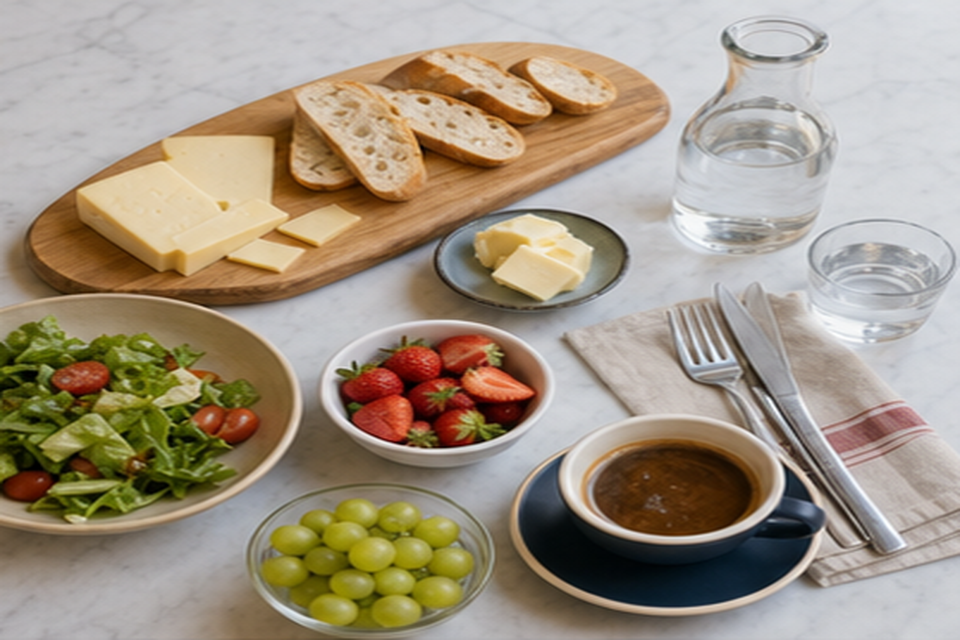
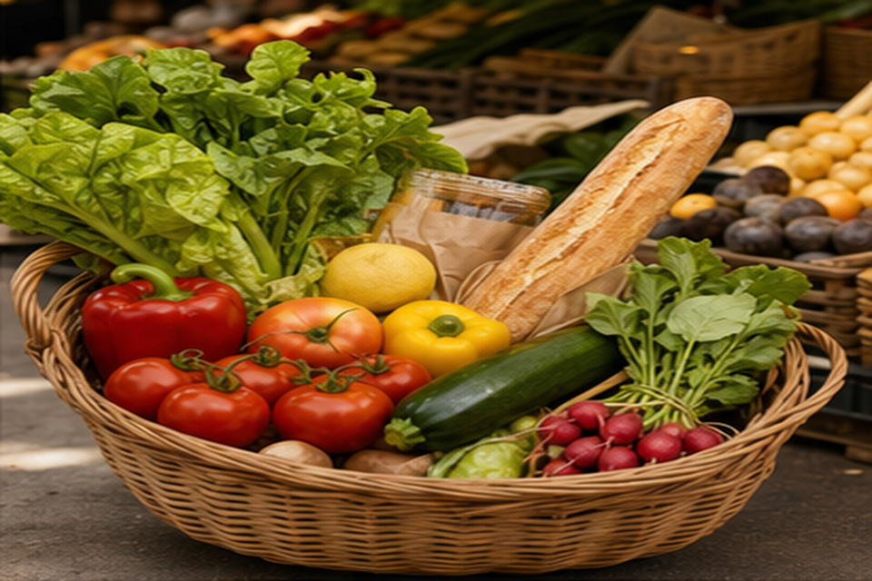
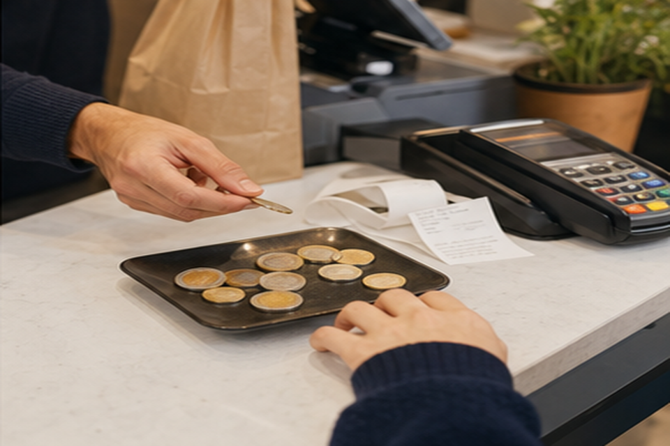

Objectif étudiant
Ce que vous devez savoir faire à la fin du thème
Vous devez pouvoir entrer dans un café ou une petite boutique, nommer des aliments et des boissons, commander poliment, demander le prix, comprendre une addition simple et utiliser correctement du, de la, de l’, des et la négation pas de / pas d’.
1 · Le vocabulaire essentiel
Aliments et boissons de base
À ce niveau, l’objectif n’est pas de mémoriser une liste immense. Il faut d’abord maîtriser les mots qui permettent d’agir : boire, manger, acheter, commander et refuser poliment.

Produits fréquents
Du pain, du fromage, de la salade, des fruits
Ces mots servent à parler d’un repas simple, d’un petit déjeuner ou d’un achat à l’épicerie.

Boutique
J’achète des légumes et une baguette.
Pour un produit comptable, utilisez souvent un, une, des : une pomme, une baguette, des tomates.
Boissonsde l’eau, du café, du thé, un jus d’orange
Petit déjeunerun croissant, du pain, du beurre, de la confiture
Repas simplede la soupe, de la salade, du riz, du poulet
Fruitsune pomme, une orange, des fraises, des raisins
2 · Quantité précise ou quantité indéfinie
Pourquoi on dit « un café » mais « du café » ?
En français, il faut souvent choisir entre une unité précise et une quantité non précisée. Un café peut être une tasse commandée au café. Du café signifie une quantité de café, sans dire exactement combien.
UnitéJe voudrais un croissant.
Quantité indéfinie masculineJe prends du pain.
Quantité indéfinie féminineElle mange de la salade.
Devant voyelleNous buvons de l’eau.
PlurielIls achètent des fruits.
3 · Les articles partitifs
Du, de la, de l’, des
Les articles partitifs indiquent une partie ou une quantité indéfinie. Ils sont indispensables avec les aliments et les boissons parce qu’on ne dit pas toujours la quantité exacte.
du + masculindu café, du pain, du fromage, du riz
de la + fémininde la salade, de la soupe, de la tarte
de l’ + voyelle / h muetde l’eau, de l’huile, de l’orangeade
des + plurieldes fruits, des légumes, des croissants
Attention : du vient de de + le. On ne dit pas de le pain, on dit du pain.
4 · La négation de quantité
Après « pas », on utilise souvent « de »
Quand vous niez une quantité, du, de la, de l’ et des deviennent généralement de ou d’. C’est une règle très importante pour parler correctement au café ou au restaurant.
Je prends du café.Phrase affirmative : quantité indéfinie.
Je ne prends pas de café.Phrase négative : pas de + nom.
Il y a de l’eau.Devant voyelle : de l’.
Il n’y a pas d’eau.Devant voyelle après négation : d’.
Je ne prends pas du café.Correction : Je ne prends pas de café.
Nous n’achetons pas des fruits.Correction : Nous n’achetons pas de fruits.
5 · Commander avec politesse
Je voudrais...
Je voudrais est une formule très utile parce qu’elle est polie et simple. Elle permet de commander sans être brusque. Elle est plus douce que je veux, qui peut sembler trop direct dans un café.
Commande : Je voudrais un café, s’il vous plaît.
Ajout : Et un croissant, s’il vous plaît.
Question : Vous avez de l’eau ?
Prix : Ça coûte combien ?
Paiement : Je peux payer par carte ?
6 · Prix et quantités
Comprendre une addition simple
Pour les prix, la virgule sépare les euros et les centimes : 2,50 € se lit deux euros cinquante. En situation réelle, on entend souvent seulement le nombre après « euros ».

Prix
Ça fait neuf euros quatre-vingts.
Le vendeur peut dire : Ça coûte combien ?, Ça fait combien ?, Ça fait 9,80 €.
Menu
Lire un menu court
Repérez d’abord les catégories : boissons, pâtisseries, plats simples, menu déjeuner.
7 · Dialogue modèle
Au café
Serveuse : Bonjour, vous désirez ?accueil
Client : Je voudrais un café crème et un croissant, s’il vous plaît.commande
Serveuse : Très bien. Et pour vous ?interaction
Client : Pour moi, un thé et une part de tarte.ajout
Client : Ça fait combien ?prix
Serveuse : Ça fait neuf euros quatre-vingts.addition
Erreurs fréquentes
À corriger dès le début
Je voudrais café. → Je voudrais un café.article
Je prends de le pain. → Je prends du pain.du
Je bois du eau. → Je bois de l’eau.voyelle
Je ne prends pas du café. → Je ne prends pas de café.négation
C’est combien coûte ? → Ça coûte combien / C’est combien ?question